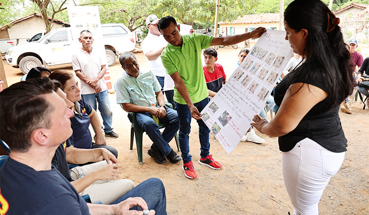

CDH
08 agosto 2024 | Publicado en Noticias
¿Qué dice el clima? Jóvenes hondureños monitorean comportamiento de la lluvia en sus comunidades

Datos recolectados por los voluntarios, alimentan la base de datos de los sistemas nacionales de observación del clima
Es mediodía en El Papalón, una de las comunidades más secas del municipio El Triunfo, quizá de toda Honduras. Los pobladores se refugian
en sus casas para disfrutar del almuerzo y el polvo amarillento que antes enturbiaba la vista,
se asienta por la falta de vehículos y transeúntes.
Las jóvenes Yorlenis Elizabeth Torres y Sarai Escobar, proceden a mostrar cómo funciona el pluviómetro.
Una de ellas vierte agua dentro de la boca del tubo de vidrio, explica cómo se coloca el equipo y cómo leer el dato una vez que se ha llenado.
A continuación, apunta los datos y el acumulado de esta información, lo refleja en gráficas coloridas y sencillas en una cartulina. Con esta información,
ayudan a concluir cómo será la temporada lluviosa y cómo deben reaccionar los comunitarios y productores agropecuarios.
Ambas jóvenes forman parte de la red de observadores y monitores del clima, un conjunto de voluntarios regados por los municipios El Corpus, Concepción de María y El Triunfo,
todos ellos ubicados en el corredor seco. A diciembre de 2023, se han conformado dos redes de observadores climáticos: una en Guatemala con 18 promotores (7 mujeres y 11 hombres)
y una en Honduras con 40 promotores (18 mujeres y 22 hombres).